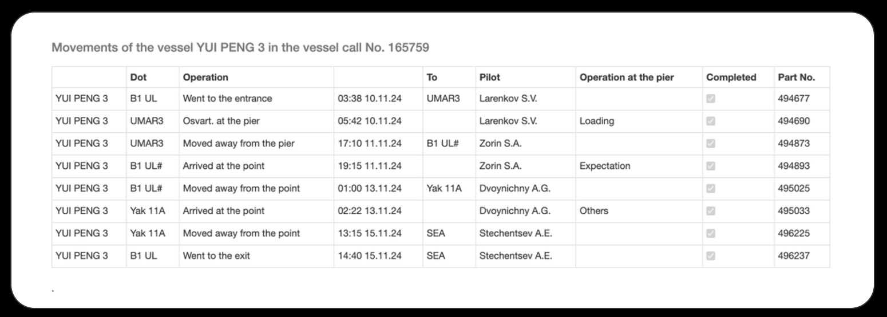

In November 2024, two underwater data cables in the Baltic Sea experienced faults, disrupting communications between European nations and igniting suspicions of sabotage. A Chinese cargo vessel, the YUI PENG 3, quickly became a focus for both investigators and the online open source research community. Some mistakenly suggested that this port log showed the vessel's captain was a Russian citizen (they confused a temporary harbor pilot with the ship's captain). But a key question emerged: could the authenticity of the log be verified? What is the original URL for this log? (don't include the "http://" or "https://")
